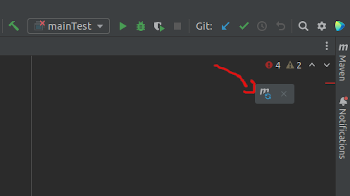

Create Jar file with intellij in the most easiest way
You know how everythin in linux is file?
So its indeed true.
I tried to create a huge jar with a lot of dependencies from the maven local repository(Extracted dir), which I had to go and bring one by one
The names of the dependencies I needed:
spring-boot-2.5.0
logback-classic-1.1.11
logback-core-1.1.11
aws-lambda-java-core-1.2.0
aws-serverless-java-container-core-1.0
aws-serverless-java-container-spring-1.0
classmate-1.3.4
jackson-annotations-2.13.1
jackson-core-2.13.1
jackson-databind-2.13.1
jackson-module-afterburner-2.12.3
commons-fileupload-1.3.3
commons-io-2.2
javax.servlet-api-3.1.0
javax.ws.rs-api-2.1
httpcore-4.4.14
tomcat-embed-core-8.5.27
tomcat-embed-el-8.5.27
tomcat-embed-websocket-8.5.27
tomcat-annotations-api-8.5.27
jcl-over-slf4j-1.7.25
jul-to-slf4j-1.7.25
log4j-over-slf4j-1.7.25
slf4j-api-1.7.25
spring-web-5.3.7
snakeyaml-1.17
spring-core-5.3.7
First of all they need to be downloaded from maven repo to the local repo. When you are using intellij its very easy, search for them in the Maven Repository
Add the dependency snippets in pom.xml file in your project:
<dependency>
<groupId>net.sourceforge.nekohtml</groupId>
<artifactId>nekohtml</artifactId>
<version>1.9.22</version>
</depdendency>
And press the button for 'Load maven changes' which is

And load maven changes
You can also do that by using the command:
mvn org.apache.maven.plugins:maven-dependency-plugin:2.1:get -DrepoUrl=http://nekohtml.sourceforge.net/ -Dartifact=net.sourceforge.nekohtml:nekohtml:1.9.22
This command will download the dependency to your local repository ~/.m2
Build complicated JAR manually
How to build a complicated jar that includes that contains Extracted Directories, Library Files, Module Output, Module Sources and more.
Do this with the UI can be very exahusting. In my case I only needed Extracted Directories of all the above. and I needed it as a zip, which complictes it even more.
The way to solve this is by creating a file that configures the jar, where you can write the files you want in your jar.
Go to the project .idea dir - cd $proj_dir/.idea
If you have artifacts configured, you will have a folder named artifacts. Within you will find files that define the artifacts that you already have artifact-name.xml
If you don't have artifacts defined yet, you can create the directory and by the same logic create the artifact
mkdir artifacts
touch myartifact.xml
If you already have an artifact you can look at its structure, if not you can put whatever you want in this structure:
<component name="ArtifactManager">
<artifact type="jar" name="some:jar">
<output-path>$PROJECT_DIR$/out/artifacts/mydir</output-path>
<root id="archive" name="my.jar">
<element id="module-output" name="module-name" />
<element id="extracted-dir" path="$MAVEN_REPOSITORY$/xml-apis/xml-apis/1.4.01/xml-apis-1.4.01.jar" path-in-jar="/" />
<element id="extracted-dir" path="$MAVEN_REPOSITORY$/org/springframework/spring-expression/5.3.7/spring-expression-5.3.7.jar" path-in-jar="/" />
<element id="library" level="project" name="Maven: cglib:cglib-nodep:3.2.4" />
<element id="artifact" artifact-name="artifact:jar" />
<element id="file-copy" path="$USER_HOME$/aa" />
<element id="dir-copy" path="$MAVEN_REPOSITORY$/antlr" />
</root>
</artifact>
</component>
Explanation:
component - The name of the component that Intellij uses - Always ArtifactManager
artifact - The type of the artifact and its name, that will be shown in the artifact part in When getting inside File->Project Structure->Artifacts
output-path - Where the jar file will be outputed to. PROJECT-DIR - Intellij variable that contains the project
root -
id - The type of the file.
name - The name of the file that is the ouput of the process
element -
id -
module-output - Some module output- as name put the module name. Usually the current module
extracted-dir - Extracts the dir that you give as path into the jar. $MAVEN_REPOSITORY - The path to local maven repository.
library - A maven library that you want to be in the jar.
artifact - Artifact that intellij have that you want to be in the jar.
file-copy - A file that you want in the jar.
dir-copy - A directory to have tis content in the jar.